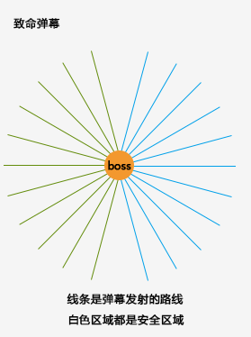
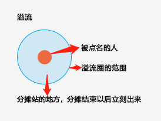
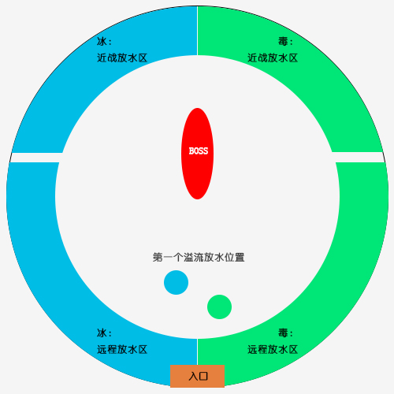

1. 每次致命弹幕以后，身上印记达到4-5层的人去消层数；
2. 身上印记超过5层的人立刻去消层数；
3. 致命弹幕的冰刺和毒刺是固定的，远离以后可以依靠走位躲开；
4. 溢流炸的时候是从点名人的脚底下开始出水，向四周扩散，所以分摊的时候只需要站在边缘，溢流炸了以后迅速离开，不踩水就不会叠层数；
5. 消层数的时候，会造成全团AOE，身上的印记不会变，但是在消的时候会有3秒变成另外一种，3秒后恢复原来的印。千万不要看到DBM的提示以为自己的印记变了跑错边。



深渊指挥官西瓦拉用冰霜烙印或剧毒烙印标记附近所有的玩家。
接触永远相反印记的玩家，或收到相反元素的伤害后，玩家会收到（不稳定混合物）的影响。
在史诗难度下，深渊指挥官西瓦拉会持续施放奇美拉印记，使玩家持续叠加(冰霜烙印)和(剧毒烙印)。
说明：就是说印记叠层数的速度会变快，需要安排消层数的时间。
用冰冷的烙印标记玩家，每1秒造成3,273点冰霜伤害，并使移动速度降低5%，该效果可叠加。
说明：就是有伤害，别怕，治疗会加你，注意下自己的能量条。
冰霜烙印在玩家的血管中流动，缓缓地将其冻结，如果玩家未持续移动，则会冻结。
说明：中了冰霜烙印以后，没事走两步，不要让自己的能量条长满。
目标的身体变成寒冰，使其冰冻8秒。
说明：跟法师深结的效果一样。
用剧毒的烙印标记玩家，每3秒造成7,791点自然伤害，并使收到的治疗效果降低5%，该效果可叠加。
说明：就是有伤害，别怕，治疗会加你，注意下自己的能量条。
剧毒烙印在玩家的血管中流动，如果玩家持续移动，则变为癫狂。
说明：中了剧毒烙印以后，没事别乱动，不要让自己的能量条长满。
目标的精神变得狂乱，使其迷惑8秒。
说明：就是迷惑，不确定能不能被驱散什么的，反正被迷惑的都是猪。
混合毒药在玩家体内催化，使其爆炸，每1秒对所有盟友造成9,071点自然伤害，持续3秒。
说明：请明白异性相斥特性，不要跟不同标记的人站在一起。
碾压目标，造成570,815点物理伤害并由目标和5码内的所有玩家分摊，此外碾压回响还会施放一道震荡波，将所有玩家击退。
说明：简单来说就是集合分摊，或者T自己开技能单吃。如果选择分摊，要主要背后的朝向不能离水太近，不能有“异性”。
攻击有一定几率施加白霜或脓毒污染，会根据目标已有的奇美拉印记施加相应的效果。
导致目标的冰霜烙印开始流血，每1秒造成3,459点冰霜伤害，持续10秒，此效果可叠加。
当效果消失时会在目标位置制造一片冰霜之地，叠加的层数会决定它的大小。
说明：就是T会叠DEBUFF叠到差不多层左右就换T去外边放水。其他人没事别踩水。
冰冻的地面冻住站在上面的所有玩家，造成46,694点冰霜伤害，并施加冰霜烙印效果。
说明：谁踩谁是猪。
导致目标的剧毒烙印开始流血，每1秒造成3,459点自然伤害，持续10秒，此效果可叠加。
当效果消失时会在目标位置制造一片败血之地，叠加的层数会决定它的大小。
说明：就是T会叠DEBUFF叠到差不多层左右就换T去外边放水。其他人没事别踩水
腐烂的地面使再战上面的所有玩家中毒，造成46,694点自然伤害并施加剧毒烙印效果。
说明：谁踩谁是猪
施法者发射一连串剧毒箭和寒冰箭，对命中的每个玩家造成冰霜或自然伤害，并施加冰霜烙印或剧毒烙印效果之一。
深渊指挥官西瓦拉的能量达到100时会施放致命弹幕。
说明：弹幕颜色会在BOSS放出技能前，boss的身边出现，看好自己标记对应的颜色站过去，别走到另一个颜色上去。
面对BOSS，第一次弹幕左冰右毒，第二次左毒右冰，依次循环，需要T根据顺序把BOSS脸朝门或者背朝门去拉。
使随机玩家和其奇美拉印记产生溢流。
使一名玩家及其身上的冰霜烙印于6秒内爆炸，造成484,328点冰霜伤害，由5码范围内所有玩家分摊，并制造出一滩冰霜之地。
说明：可以单吃，没有单吃技能的，需要分担，分担时站在边上，溢流炸了以后迅速远离。
冰冻的地面冻住站在上面的所有玩家，造成46,694点冰霜伤害，并施加冰霜烙印效果。
说明：谁踩谁是猪
使一名玩家及其身上的剧毒烙印于7秒后爆炸，造成484,328点自然伤害，由5码内的所有玩家分摊，并且会产生一片败血之地。
说明：可以单吃，没有单吃技能的，需要分担，分担时站在边上，溢流炸了以后迅速远离。
腐烂的地面使再战上面的所有玩家中毒，造成46,694点自然伤害并施加剧毒烙印效果。
说明：谁踩谁是猪
向随机玩家发射冰霜和剧毒十字弩箭。
向随机玩家发射一支冰霜弩箭，每1秒造成20,773点冰霜伤害并对首个目标施加一层冰霜烙印，该目标也会被钉在原地。
说明：跟达萨罗一样，被戳到地上，需要其他人拔掉。
向随机玩家发射一支剧毒弩箭，每1秒造成20,773点自然伤害并对首个目标施加一层剧毒烙印，该目标也会被钉在原地。
说明：跟达萨罗一样，被戳到地上，需要其他人拔掉。
施法者变换所有玩家的奇美拉印记效果，将冰霜烙印变换为剧毒烙印，反之亦然，并施加倒置之疾。
在英雄或更高难度下，（命运逆位）同时会将所有的（冰霜之地）和（败血之地）倒置。
更改目标的奇美拉印记，使其定身4秒，当效果消失时，目标会爆炸，并标记其4码范围内的所有玩家。
说明：就是分散站位，爆炸以后寻找同性，不要炸团。